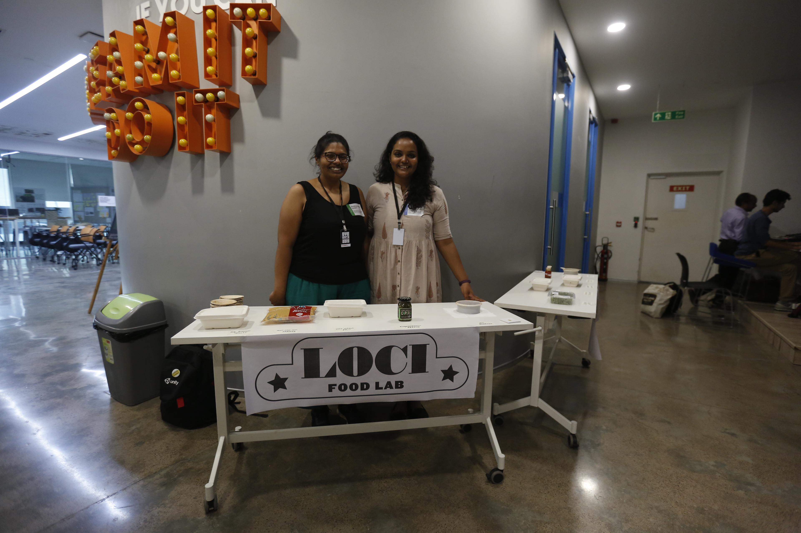

Speculative Sunday
Overview
Creating a speculative reality in which water’s needs and wants are an important considerationRole
LeadFor
EyeMyth Media Arts FestivalEyeMyth is the only Media Arts Festival in India - unique in its intersection of Indian and Global art, culture and technology.


Speculative Sunday is a day devoted to hands-on workshops that visualise radical cultural futures for India, while learning new skills in Speculative Design & Design Fiction.

Avinash opening the day with an introduction to speculative design




What’s the day like? -
We kick off the EyeMyth Sunday with ‘Bhavishya Bhojanalaya’ - a futuristic brunch curated by India’s leading food provocateur and chef Gresham Fernandes in collaboration with ‘The Good Slice’; served with a bouncing side of lo-fi music curated by indie label Skip-A-Beat.
What follows is a unique, fast-paced co-creation workshop on ‘Speculative Design’ - an increasingly in-demand global skillset for creatives. 20 groups will be led by expert facilitators on a hands-on, co-creation journeys into the future of Mumbai and India in 2040.
High Tea features a sharing of ‘HUM.2035' - a highly successful global project in Speculative Design & Design Fiction. Artists, animators and writers create a wall of projections from the workshop with the delegates for the evening party.
The evening wraps up with a series of ‘Audiovisual Performances by Future Fiction ft. Plan-B’- effectively blending the workshop, performances and afterparty into one giant seamless celebration owned by everyone.
Who am I learning from?
The workshop is facilitated by innovation studio Quicksand (www.quicksand.co.in) which is providing 20 design researchers who will be paired with 20 domain experts to conduct the workshop
What one can experience at the Speculative Sunday -
• A fast-paced hands on experience in collaboration with 300+ peers
• A primer on Speculative Design & Design Fiction
• A toolkit on speculative design with a set of field-tested approaches & tools
• An experimental brunch party
• An evening of audiovisual experiences
• Each participant will be a credited contributor to a book that inspired by the workshop
Supported by : British Council, Pro Helvetia Swiss Arts Council, Social